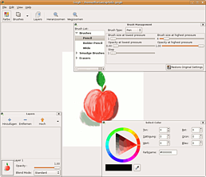
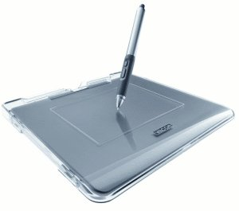

Gogh
Archivierte Anleitung
Dieser Artikel wurde archiviert, da er - oder Teile daraus - nur noch unter einer älteren Ubuntu-Version nutzbar ist. Diese Anleitung wird vom Wiki-Team weder auf Richtigkeit überprüft noch anderweitig gepflegt. Zusätzlich wurde der Artikel für weitere Änderungen gesperrt.
Zum Verständnis dieses Artikels sind folgende Seiten hilfreich:
Gogh  ist ein Grafikprogramm entwickelt für den Einsatz speziell mit Grafiktabletts, wie sie z.B. von der Firma Wacom hergestellt werden. Naheliegendes Vorbild für den Programmnamen steht der berühmte niederländische Künstler Vincent van Gogh. Das pixelbasierte Programm befindet derzeit noch in einem frühen Entwicklungsstadium. Nichts desto trotz verhält es sich schon sehr stabil in der Anwendung und ist mit dem richtigen Tablett ein mächtiges Werkzeug für den Grafikdesigner oder Hobbygrafiker.
ist ein Grafikprogramm entwickelt für den Einsatz speziell mit Grafiktabletts, wie sie z.B. von der Firma Wacom hergestellt werden. Naheliegendes Vorbild für den Programmnamen steht der berühmte niederländische Künstler Vincent van Gogh. Das pixelbasierte Programm befindet derzeit noch in einem frühen Entwicklungsstadium. Nichts desto trotz verhält es sich schon sehr stabil in der Anwendung und ist mit dem richtigen Tablett ein mächtiges Werkzeug für den Grafikdesigner oder Hobbygrafiker.
Es bietet derzeit die Möglichkeit multipler Ebenen, die in ihrer Deckkraft angepasst werden können, mehrere Pinsel sowie eine Radierfunktion. Die Bilder können im projekteigenen Gogh-Format abgespeichert werden oder als PNG oder JPEG exportiert werden. Die Bilder können skaliert und in der Größe verändert werden, wobei beinahe jede Aktion rückgängig gemacht werden kann.
Installation¶
Installation mittels DEB-Paket¶
Auf GetDeb ist ein DEB-Paket für Feisty Fawn 32/64-Bit zu finden. Die Abhängigkeiten werden automatisch erfüllt. Das Paket kann hier heruntergeladen und dann wie gewohnt installiert [7] werden.
Hinweis!
Fremdpakete können das System gefährden.

Manuelle Installation mittels Archiv¶
Vor der manuellen Installation des Programms muss man noch die wenigen Abhängigkeiten erfüllen, sofern diese noch nicht installiert sind [1].
python2.4
python-gtk2
python-gnome2
python-xml
Gogh muss nicht als Paket installiert werden, sondern man lädt von der Download-Seite das aktuelle Archive herunter und entpackt es [2].
Konfiguration¶
Programm starten¶
Das entpackte Archiv enthält die fertigen Programmdateien, Gogh kann gestartet werden, indem man über den Dateibrowser in das entpackte Archiv navigiert und dort die Datei gogh ausführt [5] .
Programmordner auswählen¶
Um die Ordnung im eigenen Dateisystem zu bewahren, kann man den gesamten Ordner nach /opt verschieben. Hierfür öffnet man ein Terminal [3] und gibt folgenden Befehl ein:
sudo cp -R ~/Gogh-0.1.0/ /opt/
Starter erstellen¶
Den fehlenden Starter bzw. eine Verknüpfung im Menü lässt sich mit dem Menüeditor auch leicht im Nachhinein erstellen [6] . Der passende Befehl lautet folglich
/opt/Gogh-0.1.0/gogh
Programmfenster dauerhaft vergrößern¶
Standardmäßig wird Gogh immer mit einer Arbeitsflächengröße von 400x400 px gestartet. Wem das für das großflächige Arbeiten zu klein ist, der kann entweder jedes Mal die Arbeitsfläche über "Edit -> Resize" seinen Bedürfnissen anpassen, oder man passt mit Hilfe eines Editors [4] in zwei Dateien im Gogh-Verzeichnis die zugehörigen Zahlen an. Zuerst passt man in der Datei goghmain.py die Zeile Nummer 379 so an wie unten gezeigt.
"goghdoc = GoghDoc(width = 1024, height = 768)"
Als nächstes öffnet man die Datei goghglade.glade im Verzeichnis glade mit einem Editor und passt die Zeilen 319 und 320 folgendermaßen an.
"<property name="width_request">1024</property>
<property name="height_request">768</property>"Von nun an, startet Gogh mit einer Arbeitsfläche von 1024x768 px sowie einem daran angepassten Programmfenster. Die Zahlen können natürlich variiert werden.
Hinweis:
Hat man den Programmordner von Gogh bereits nach /opt verschoben benötigt man Root-Rechte, um die besagten Dateien zu öffnen.
Benutzung¶
Nach dem ersten Programmstart erscheint ein eher nüchternes, simples Fenster mit eine Zeichenfläche und einer Werkzeugleiste. Wie auf dem oberen Screenshot ersichtlich, lassen sich über die Werkzeugleiste drei nützliche Dialoge hinzuschalten.
Dialoge¶
| Dialog | Beschreibung |
| Farbdialog ("Select Color") | Hier lässt sich die Farbe des aktuellen Pinsel mit einem Farbdreieck auswählen. Mit der Pipette lassen sich Farben auf dem ganzen Desktop einfach übernehmen. |
| Ebenendialog ("Layers") | Wie der Name schon verrät, lässt Gogh multiple Ebenen zu, was besonders hilfreich ist bei komplexeren Zeichnungen um vielleicht erstmal eine Farbe Auszuprobieren. Die Ebenen können in ihrer Reihenfolge getauscht, gelöscht und ausgeblendet werden. |
| Pinseldialog ("Brush Management") | Gogh bietet drei Malwerkzeuge an, einen Pinsel ("Brushes", einen verschmierenden Pinsel ("Smudge brush") und einen Radierer ("Eraser"). |

Grafiktablett¶
Gogh ist auf die Benutzung mit einem Grafiktablett ausgelegt, nicht für das Zeichnen mit einer Maus. Der Autor benutzte für diesen Artikel ein Tablett der Firma Wacom, das Graphire4 Classic XL unter Ubuntu Feisty Fawn. In diesem Fall funktionierte die Unterstützung einwandfrei (siehe Hardwaredatenbank). Eine sehr gute deutsche Anleitung zur Installation (Wiki Gimpforum  ) eines Wacom-Tabletts sowie ein Bericht über die Benutzung des Graphire 4 unter Ubuntu Feisty Fawn (freiesMagazin 06/2007 ) finden sich unten bei den Links.
) eines Wacom-Tabletts sowie ein Bericht über die Benutzung des Graphire 4 unter Ubuntu Feisty Fawn (freiesMagazin 06/2007 ) finden sich unten bei den Links.
Das Besondere an der Arbeit mit Gogh und einem Grafiktablett ist die gut implementierte Unterstützung der Druckempfindlichkeit sowie die Radierfunktion beim Umdrehen des Stiftes. Dies macht es möglich, zu zeichnen als hätte man Papier und Stift vor sich, könne jedoch den Weg über den Scanner auslassen um die Arbeit zu digitalisieren.
- Erstellt mit Inyoka
-
 2004 – 2017 ubuntuusers.de • Einige Rechte vorbehalten
2004 – 2017 ubuntuusers.de • Einige Rechte vorbehalten
Lizenz • Kontakt • Datenschutz • Impressum • Serverstatus -
Serverhousing gespendet von